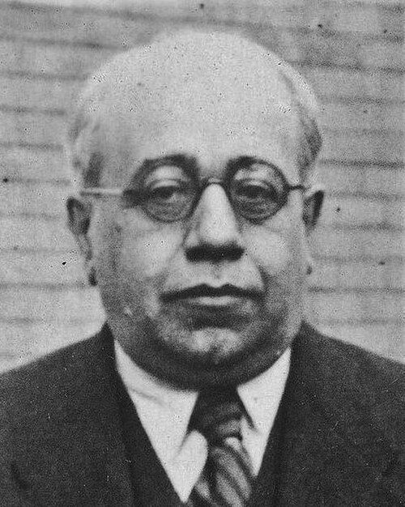

En poques paraules
La República va portar el vot de la dona, el divorci i la primera autonomia de Catalunya. La dictadura de Franco ho va suprimir tot durant gairebé quaranta anys.
Els principals canvis
- 1931: Constitució de la II República i vot femení.
- 1932: Llei de divorci i Estatut d'Autonomia de Catalunya.
- 1938–1939: se suprimeixen l'Estatut, el divorci i les llibertats.
- 1960: Compilació del dret civil especial de Catalunya.
Anècdota
A les eleccions del 1931 les dones podien ser elegides diputades, però encara no podien votar. Tres d'elles van aconseguir escó.
Curiositat
Durant el franquisme el dret civil català va sobreviure perquè es considerava dret privat: la Compilació del 1960 el va recollir per escrit.
Personatges
 Clara Campoamor1888 – 1972Advocada i diputada
Clara Campoamor1888 – 1972Advocada i diputada Victoria Kent1891 – 1987Advocada, diputada i directora general de Presons
Victoria Kent1891 – 1987Advocada, diputada i directora general de Presons Francesc Macià1859 – 1933President de la Generalitat de Catalunya
Francesc Macià1859 – 1933President de la Generalitat de Catalunya
Manuel Azaña1880 – 1940President del Govern i de la RepúblicaLLluís Companys1882 – 1940President de la GeneralitatNNiceto Alcalá-Zamora1877 – 1949Primer president de la II RepúblicaLLuis Jiménez de Asúa1889 – 1970Penalista i pare de la Constitució del 1931MMercedes Formica1913 – 2002Advocada i escriptora